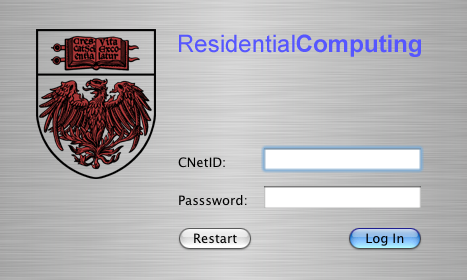

brutelogin
Description
brutelogin is the login system used by Macintosh-based lab machines maintained by Rescom at the University of Chicago. It replaces Apple's Login.app as the means of logging on to a computer, and is written in C, Objective-C, and bourne shell script.
Screenshots

Technical details
brutelogin works by preempting the OS X boot process (hence the brute in its name), and asserting control right before Login.app can launch. Because the login process on OS X is so mysterious and few outside Apple known any details about it, brutelogin cheats and tells Login.app that an authentication user is, in fact, authenticated, at which point Login.app logs in the user as normal.
brutelogin must also interface with Rescom's software, which means authenticating against our custom authentication server which returns Rescom-specific information (e.g., whether a user is an administrator on this machine). The high-level UI is written in Objective-C, the low-level functionality like networking and hash generation is written in C, and the interface with the OS is written in bourne shell script. Due to the insecurity of the SMB protocol (which is what we use for network shares), brutelogin works in such a way that the user's LDAP password is never transmitted over SMB.